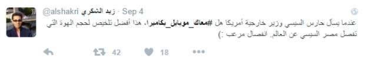
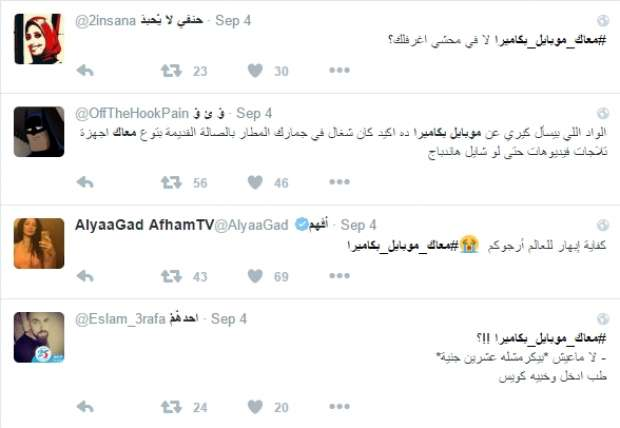
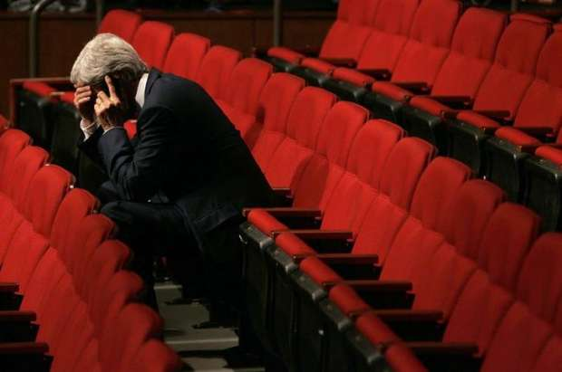

أحدث الأخبار
- باولو يقود هجوم الزمالك أمام رينجرز في دوري الأبطال
- المالية تعفي المطاعم غير السياحية من ضريبة القيمة المضافة بشروط
- "القضاء الإداري" يلزم الجامعة الأمريكية بتحصيل مصروفاتها بالجنيه المصري
- البورصة ترتفع بنسبة 0.52% في نهاية التعاملات
- إعادة فتح موانىء السويس بعد تحسن الأحوال الجوية
- محام: حفظ التحقيقات مع منى مينا في اتهامها بنشر أخبار كاذبة
- نجوى سالم .. كوميديانة انتهت حياتها بمأساة
- الأرصاد: طقس مائل للدفء الاثنين.. والعظمى في القاهرة 22
الكوميديا السوداء- موبايل كيري.. ضحك من غير سبب
"مع حضرتك موبايل بكاميرا؟".. لا داعي للظن الخاطيء، أنا لا أريد استعارة هاتفك لألتقط صورة سيلفي، بل هذا السؤال وجهه حارس الرئيس السيسي لجون كيري وزير خارجية أمريكا، كإجراء أمني قبيل لقاء جمع الطرفين (السيسي وكيري) في الهند يوم الخميس 1 سبتمبر الجاري.
للوهلة الأولى يبدو السؤال مضحكا؛ فبالطبع كيري لم يعد يستخدم هاتف نوكيا 3310. لكن البعض ذهب بعيدا في سخريته من موظف لم يفعل شيئا سوى أنه قام بعمله، دون إخلال منه بآداب وأعراف الدبلوماسية، وفق ما أخبرنا به متخصصون.


من بين هؤلاء المتخصصين، الدكتور نبيل عشوش -وهو خبير دولي وزميل المجمع البريطاني للإتيكيت والبروتوكول الدولي- يقول إنه لا قاعدة في البروتوكول الدولي تخص حمل الدبلوماسيين للهواتف خلال اللقاءات.
لكن الإتيكيت (اللياقة أو السلوك السليم) بشكل عام يفرض -بحسب عشوش- على المجتمعين إغلاق هواتفهم المحمولة، "وإن أراد أي منهم استخدامه في التسجيل أو التصوير فعليه استئذان الطرف الآخر".
والبروتوكول هو "مجموعة من قواعد المجاملة الدولية الراسخة، تستند على مباديء التحضر، والتي جعلت من السهل على الدول والشعوب العيش والعمل معا"، وفق تعريف الاتحاد الدولي لضباط ومستشاري البروتوكول.
وفي الحالة التي نحن بصددها فلا بد التمييز -على حد قول عشوش- بين الإتيكيت والإجراءات الأمنية. فما حدث هو إجراء أمني، من حق الرئيس كونه رئيس دولة وهو المضيف لكيري أن يفرضه ولا عيب في ذلك.
كيري يجري اتصالا من غرفته بالمستشفى العام في بوسطن 10 يونيو 2015- رويترز
* اترك موبايلك على الباب
يتذكر السفير حسين هريدي -وقد كان سفيرا لمصر في إسبانيا وباكستان- أنه وعدد من السفراء قبل لقاء مع الرئيس الباكستاني الأسبق برويز مشرف، طلب منهم أمن الرئاسة ترك هواتفهم المحمولة على الباب، وفي المقابل حصل كل سفير على بطاقة برقم يخص هاتفه.
وهو أمر بحسب السفير معتاد، إذ يقول "لكل دولة مراسمها لكن الإجراءات الأمنية واحدة، وأخذ الهواتف وأجهزة التسجيل جزء منها". وتلك الإجراءت -بحسب هريدي- "تَجُبُّ المراسم".
* فلاشات الكاميرا
بمجرد أن تفتح رابط الفيديو، الذي نشرته قناة هندية على يوتيوب ضمن تغطية إخبارية، تحت عنوان " كيري يقابل رئيس مصر السيسي في الهند" وهو الفيديو الذي تضمن سؤال حارس الرئيس لوزير الخارجية الأمريكي، تقابلك تعليقات ساخرة حد السُباب، كتبها عرب ومصريون بينها التعليق التالي.
والرد على هذا التعليق، أمرٌ يعرفه المصورون جيدا الذين يغطون مثل تلك اللقاءات، إذ يسمح لهم المنظمون بعدد من الدقائق المتفق عليها لالتقاط الصور اللازمة قبل بدء اللقاء، وفيها يمثل المجتمعون أمام عدسات الكاميرات أنهم يتحدثون ويتناقشون ويبتسمون، في حين أن الحديث فعليا لم يبدأ بعد، وضحكاتهم صُنعت خصيصا للكاميرا.
الرئيس عبد الفتاح السيسي يستقبل وزير الخارجية الأمريكي جون كيري في الهند 1 سبتمبر 2016 - صورة من الرئاسة
نعود لكيري، ونتساءل إن كان الدبلوماسيون يعهدون ترك هواتفهم قبل هذا النوع من اللقاءات، فلما سأل حرس الرئاسة عن أمر بديهي؟.
بمجرد كتابة "موبايل كيري" في خانة البحث على خدمة رويترز للصور، ظهرت النتائج كما في الصور التالية:
كيري مع ممرضات في مستشفى بإثيوبيا 1 مايو 2014- رويترز
كيري 16 يونيو 2016 - رويترز

كيري 26 سبتمبر 2008 - رويترز
كيري أغسطس 2014 - رويترز
كيري في جاكرتا فبراير 2014 - رويترز
ومن الصور، يتضح أن كيري شخص لا يتحرك دون هاتفه المحمول، وكثيرا ما يأخذ السيلفي، بل أنه يضع غطاء للحفاظ عليه كما نفعل نحن، وربما لتلك السمعة التي أُخذت عن كيري، تولى موظف الرئاسة مهمة تنبيهه.
لماذا إذن تدفقت السخرية من الحارس المصري دون التحقق من صواب من فعله؟ الجواب ربما يكشف عن مدى فقدان ثقة قطاع كبير من المصريين فيما تفعله الحكومة أيا كان. وتفتح السخرية الباب لضحك كالبكاء.
الاخبار المتعلقة


{kind=link}
تعليقات الفيسبوك